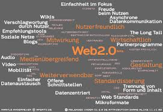

- 

Кафедра комп'ютерних систем та мереж заснована у 1991 році. Кафедра входить до складу Інституту телекомунікаційних та комп'ютерних систем Хмельницького національного університету. З червня 2005 року кафедру очолює доктор технічних наук, професор, академік міжнародної академії інформатизації М'ясіщев О.А. На сьогоднішній день колектив кафедри стовідсотково складається з викладачів з науковими ступенями, які є висококваліфікованими спеціалістами в галузі проектування комп'ютерних мереж, цифрових обчислювальних пристроїв та систем, мережних інформаційних технологій, захисту інформації. Лабораторна база кафедри є провідною в університеті і включає в себе більше ста одиниць сучасного комп'ютерного та мережного устаткування.
Комп’ютерна інженерія (Computer Engineering) – це напрям, який об’єднує в собі частини електротехніки, комп’ютерних наук та програмної інженерії необхідні для проектування та розроблення комп’ютерних систем. Спеціалісти у галузі комп’ютерної інженерії мають знання з електротехніки, технологій проектування програмних систем та програмно-апаратних комплексів, на відміну від інших комп’ютерних напрямів, які зосереджуються лише на одній галузі знань. Фахівці з комп’ютерної інженерії приймають участь у багатьох аспектах проектування апаратно-програмних систем, від проектування мікропроцесорів, персональних та супер комп’ютерів до проектування цифрових схем. Ця галузь інженерії зосереджена не лише на тому як функціонують комп’ютери самі по собі, але й включає усі аспекти інтеграції комп’ютерних систем у різні галузі, від технологічних процесів на виробництві, електростанціях та ін. до літальних космічних апаратів.
Комп’ютерна інженерія (Computer Engineering) – це напрям, який об’єднує в собі частини електротехніки, комп’ютерних наук та програмної інженерії необхідні для проектування та розроблення комп’ютерних систем. Спеціалісти у галузі комп’ютерної інженерії мають знання з електротехніки, технологій проектування програмних систем та програмно-апаратних комплексів, на відміну від інших комп’ютерних напрямів, які зосереджуються лише на одній галузі знань. Фахівці з комп’ютерної інженерії приймають участь у багатьох аспектах проектування апаратно-програмних систем, від проектування мікропроцесорів, персональних та супер комп’ютерів до проектування цифрових схем. Ця галузь інженерії зосереджена не лише на тому як функціонують комп’ютери самі по собі, але й включає усі аспекти інтеграції комп’ютерних систем у різні галузі, від технологічних процесів на виробництві, електростанціях та ін. до літальних космічних апаратів.
Спеціалісти з комп’ютерної інженерії залучаються до проектних та дослідних робіт у галузі робототехніки, оскільки ця галузь вимагає використання цифрових пристроїв для моніторингу та керування такими компонентами, як електродвигуни, сенсори, система комунікації.
Підчас навчання на факультеті комп’ютерних систем та програмування, студенти мають можливість обирати спеціалізацію (комп’ютерні мережі, програмування, системне програмування та ін.) для більш глибокого вивчення відповідних дисциплін.
Після завершення 4-х річної програми підготовки бакалавра за напрямом комп’ютерна інженерія, студентам факультету комп’ютерних систем та програмування пропонується продовжити навчання за спеціальностями: